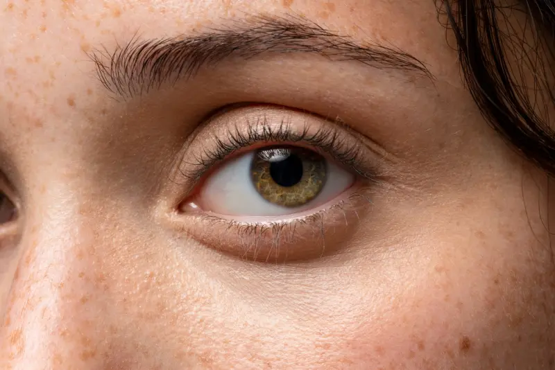

Queratocono
Agendar citaEs una enfermedad degenerativa que deforma y adelgaza progresivamente la córnea, provocando visión distorsionada. Aparece en la juventud y es especialmente frecuente en Ecuador. Detectarlo a tiempo es clave para frenar su avance.